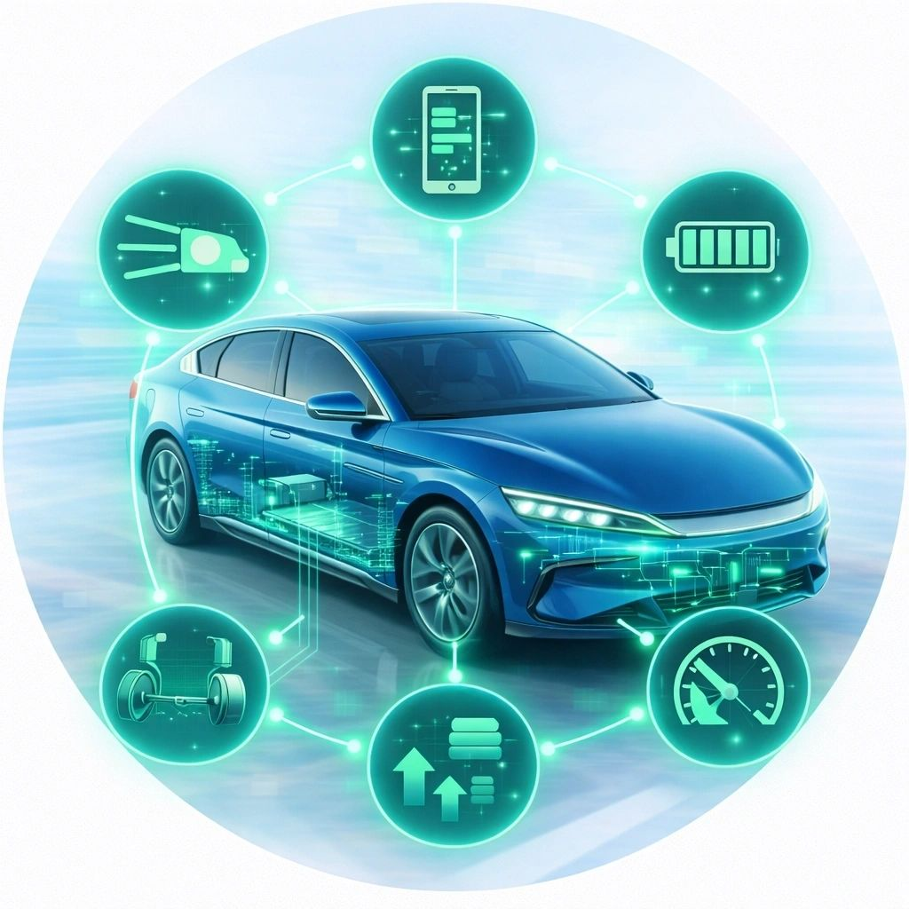

Сесія обривається
Зарядка стартує і за кілька хвилин падає — особливо на швидких станціях.
Проблеми зарядки BYD
Зарядка обривається на середині, швидка зарядка не запускається або тягне повільніше, ніж має? У більшості випадків справа не в станції і не в батареї, а в програмному забезпеченні блоків.
Зарядка стартує і за кілька хвилин падає — особливо на швидких станціях.
DC-станція не запускається або дає потужність у рази нижчу за заявлену.
Відсотки йдуть нерівно, авто показує різний залишок до повного.
З однією станцією все добре, з іншою — помилка з'єднання.
Процесом зарядки керують кілька блоків одночасно: BMS, бортовий зарядний пристрій, контролери звʼязку зі станцією. У старих версіях ПЗ є відомі помилки сумісності зі станціями та логіки заряду — виробник виправляє їх оновленнями, які в Україну «самі» не приїжджають. Ми бачимо реальні версії всіх блоків через дилерський VDS і ставимо актуальні.

Повний звіт: версії ПЗ, помилки, реальний стан систем. Включно з блоками, яких не бачать звичайні сканери.
Штатні версії виробника через дилерський VDS. Бекап перед роботами.
Налаштування, активація функцій, відновлення конфігурацій.
Синхронна робота систем після оновлень і втручань.
Діагностика покаже: дивимось стан батареї, помилки BMS і логи зарядки. Якщо проблема апаратна — чесно скажемо до будь-яких робіт.
Діагностика всіх блоків — 50$. Якщо потрібне оновлення — від 250$ за всі блоки. Ціну фіксуємо до початку робіт.
Діагностика — близько години. Оновлення блоків — зазвичай 2–4 години, найчастіше за один візит.
Базуємось у Києві, але працюємо з клієнтами з усієї України. Напишіть, звідки ви — підкажемо формат.